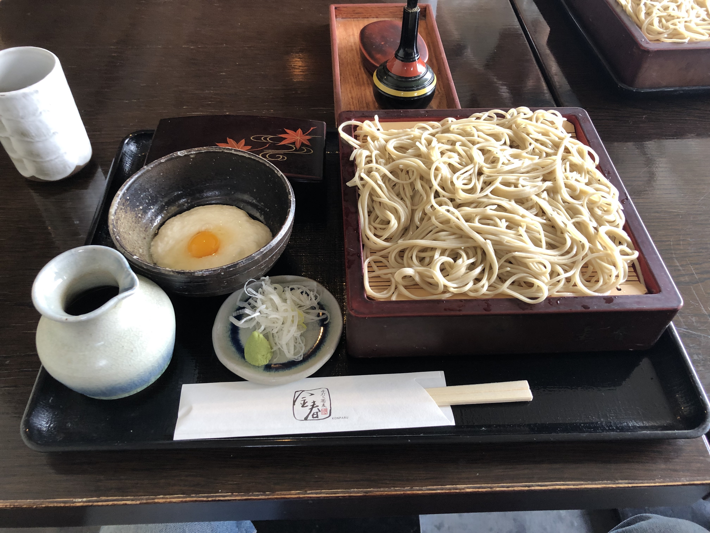

Soba

Ingredients
- 3 ⅓ cups soba-grade buckwheat flour (such as Anson Mills Ni-Hachi Sobakoh)(about 14 ounces)
- ¾ cup all-purpose flour (about 3 1/4 ounces)
- 1 ¼ cups filtered water, chilled, divided
- Tapioca starch, for sprinkling
How to cook
- Set a large bowl on a damp paper towel to hold the bowl in place on work surface. Sift buckwheat flour and all-purpose flour into bowl. Measure 2 tablespoons chilled water into a small bowl, set aside. Add remaining 1 cup plus 2 tablespoons chilled water to flour mixture; using your fingertips, quickly toss until water is evenly incorporated. Continue to toss until it forms a crumbly mixture, about 1 minute
- Using the palms of your hands and working quickly, rub dough in a circular motion until it begins to form small clumps, about 2 minutes. If dough feels dry, add 1 tablespoon reserved chilled water. Gather the small clumps, and shape them into a large ball. Transfer dough to a clean work surface, and knead until it is semi-firm and smooth but not sticky, about 2 minutes. If dough still feels dry, add remaining 1 tablespoon chilled water, kneading until dough is smooth and shiny with no visible cracks. Press dough ball into a 1-inch-thick disk
- Lightly dust dough and a large cutting board with tapioca starch. Using a rolling pin, roll dough into an 18-inch square (about 1/8 inch thick). (Do not flip the dough while rolling it out.) Trim edges to create an even square
- Generously sprinkle tapioca starch over left half of dough square; fold right half over. Generously sprinkle tapioca starch over top half of dough rectangle; fold bottom half up and over to form a 9-inch square with 4 layers of dough
- Starting along the right side, use a ruler and long knife (or a cutting guide and soba knife) to cut the dough stack into thin (about 1/8-inch-thick) noodles. Once all noodles are cut, working in batches, gently shake off excess starch by tapping ends of noodles on cutting board. Transfer noodles to a baking sheet, laying them flat. (Do not bundle.) Cover with a clean towel, and wrap tightly with plastic wrap. Refrigerate until ready to cook
- Set a colander in a large bowl filled with ice water; set aside. Bring an 8-quart pot of water to a rolling boil over high. Gently drop 2 servings of noodles (about 12 ounces) into boiling water. Cook noodles, without stirring, until al dente, about 1 minute and 30 seconds
- Using a large mesh strainer, transfer noodles to colander set in ice water. Remove colander from ice bath, and rinse noodles under cold running water. Drain and rinse again. Drain thoroughly by tapping the side and bottom of colander (do not toss). Divide noodles between 2 bowls. Repeat cooking process in steps 6 and 7 with remaining noodles